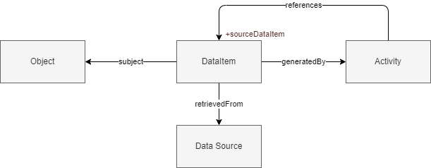
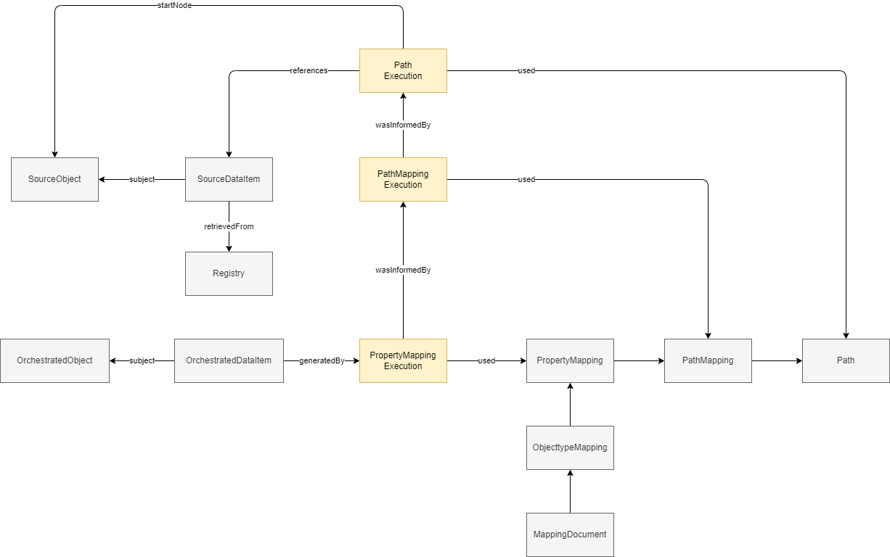

This document specifies the IMX Lineage model. The IMX lineage model provenance information generated during an IMX orchestration process, building upon [IMX-Metadata] and [IMX-ModelMapping].
Status of this document
This is the final draft of this document. Edits resulting from consultations have been applied.
Versiebeheer
Dit document is aan verandering onderhevig. Het versiebeheer van het document geeft inzicht in wijzigen en de actualiteit ervan.
Versie
Datum
Status
Bewerking
Toelichting
0.1
dd-mm-yyyy
concept
Initieel document
"Kapstok" document aangemaakt
1. Introduction
Kadaster and Geonovum are developing a mechanism to facilitate the semantic integration of decentralized data registers. A central API operates on an integrated semantic layer. The semantic layer constitutes of a coherent information model integrating several domain specific domain models. An API orchestration layer directs data communication to and from existing data registries.
Data retrieval is according to the information model of the semantic layer. Data retrieval will optionally include metadata about the lineage (provenance) of the data.
This document specifies the lineage model used and the mechanism introduced in [IMX-Metadata] to relate the lineage data as metadata to published data.
1.1 Scope
The scope of this lineage model is:
lineage related to data being published as a result of data integration. The lineage will describe source and process/operation data
lineage data at the instance level of properties
1.2 Working proces
This document, lineage model, is developed in the WaU project .....
The principal working method is agile development through several High5 sessions on use cases of increasing complex information content and ....
2. Analysis
2.1 Context
In today's complex and interconnected world, the answers that people are seeking often require access to data from multiple registries. This is because the information needed to answer a question or solve a problem is often distributed across multiple sources and domains. Data needs to be aggregated and consolidated in order to satify user needs. This needs to be done transparently. It should be clear where the resulting data came from and what has been done to it. For this, insight into lineage of data should be provided.
The lineage model explained in this document provides a standardised way to work with, store and communicate lineage information of data.
Within this chapter two sections are presented; Requirements and Approach. In the Requirements section the requirements for the information model are listed. In the Approach section the requirements are translated into a conceptual model which forms the basis for the logical model described in chapter 4.
3.1 Requirements
The following requirements have been taken into account in the approach:
We should be able to identify and describe singular data items
We should be able to describe which data items contributed to the generation of a data item
We should be able to describe activities that act upon data items
We should be able to find data items that contributed to the generation of a data item
We should be able to describe how data item contributed to the generation of a data item
3.2 Approach
The first requirement, to identify and describe singular pieces data, is realized by the introduction of the data item objecttype as described in IMX-Metadata.
A data item can be described from different perspectives. This gives a basic model, applicable for many usecases. The perspective the lineage model takes is one of provenance [prov-o]. The lineage model adds to this a way to connect one data item to one or more other data items it is derived from. The latter are called source data items, the former orchestrated data items.
For the source data item it is important to know from which data source it is retrieved so that users can interpret the source data item in the context it was published in. This also allows allows users to find related information.
Figure 2Orchestrated data items derived from source data items
This, however, does not provide any insight into how the source data item(s) were used to generate the orchestrated data item. In order to allow for this the generation itself is identified as an orchestration activity, which is a type of activity. This provides the information that the data item is generated using orchestration techniques.

Figure 3A data item is generated by an activity
Lastly, we provide insights into the transformation itself, the mapping used for the orchestration activity. The mapping is described in a seperate artifact called the model mapping. This document describes the relation between two models and how data from one can be transformed to the other. The mapping is structured according to the mapping specification. The rules to generate a specific data item are encompassed in a property mapping, which is executed during orchestration. To describe this, we introduce a specific type of orchestration activity, the property mapping execution.
Term
Definition
used
Usage is the beginning of utilizing an entity by an activity. Before usage, the activity had not begun to utilize this entity and could not have been affected by the entity. (based on prov:used)
orchestration activity
An orchestration activity is an activity that is part of an IMX orchestration process.
Figure 4A data item is generated by a property mapping execution
The property mapping execution can be deconstructed into several smaller activities as it may include multiple intermediary results; each having a query path and a start node, which are then combined and/or transformed into the value of the orchestrated data item. The PropertyMapping is the main entity describing the steps (path mappings) required to derive a specific data item in order of execution. Each step is an activity that informs the property mapping execution; which yields the orchestrated data item. As part of the lineage information we refer to elements in the mapping to provide insights into how the orchestrated data item was constructed. This allows us to convey which data items were used to derive a new data item, and how these were used. Adding this to our lineage model yields the following model.
Term
Definition
was informed by
A relation between activities stating that one activity uses some output of the other activity. (based on prov:wasInformedBy)
The source object from which the path is followed to find the used data item.
A path mapping consists out of one path; possibly yielding any number of data items, when executed. The lineage should give insights on precisely how each data item was found and how it contributed to the generation of the orchestrated data item. For each "OrchestrationActivity -used-> DataItem" we map to the respective path.
We do this by further deconstructing the path mapping execution into each path that is defined in the mapping. For each path execution that informs the path mapping execution a used property is linked to the respective path in the model mapping. This allows us to point to the exact mapping element providing the path that leads us to the source data item. A pointer to the node from which the path is followed is added, this is the start node.
Figure 5A data item is generated by a property mapping execution, referencing other data items
In this model several types have different roles following from incomming relations. This could make the datamodel less clear. In the following diagram roles are made explicit.

Figure 6Orchestrated data item is generated by a property mapping execution, referencing source data items
When multiple source data items are used this would result in multiple "wasInformedBy": { ... } statements within the "wasGeneratedBy":{ ... } element.
3.2.1 Summary
The requirements are reflected in the model by introducing the following concepts:
Data item
"orchestrated data item" for req 1
"source data item" for req 2.
In order to be able to talk about them.
Orchestration Activity
Property Mapping execution and propertyMapping execution for req 3
In order to describe that orchestration took place.
Data source for req 4.
In order to decribe where source data is retrieved from and thus can be found.
Mapping element
Property Mapping and path for req 5.
In order to precisely indicate what rules were applied to the source data to derive the orchestrated data item(s).
A path, or path expression, is a set of declarations which, conceptually, represent
a possible route through a graph of data items. A path is comprised of an ordered,
non-unique sequence of segments. Each segment represents a step in that route.